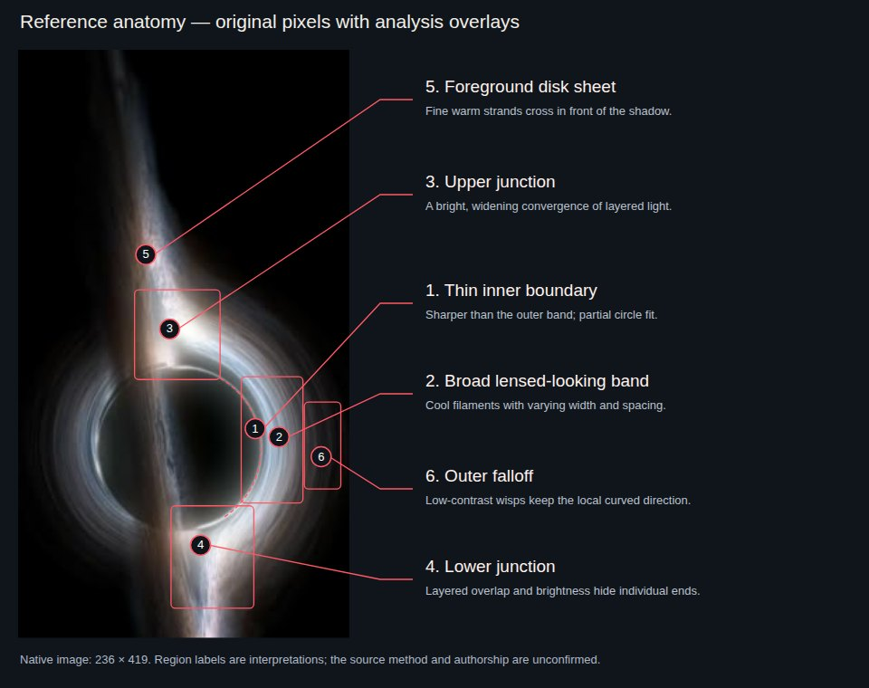
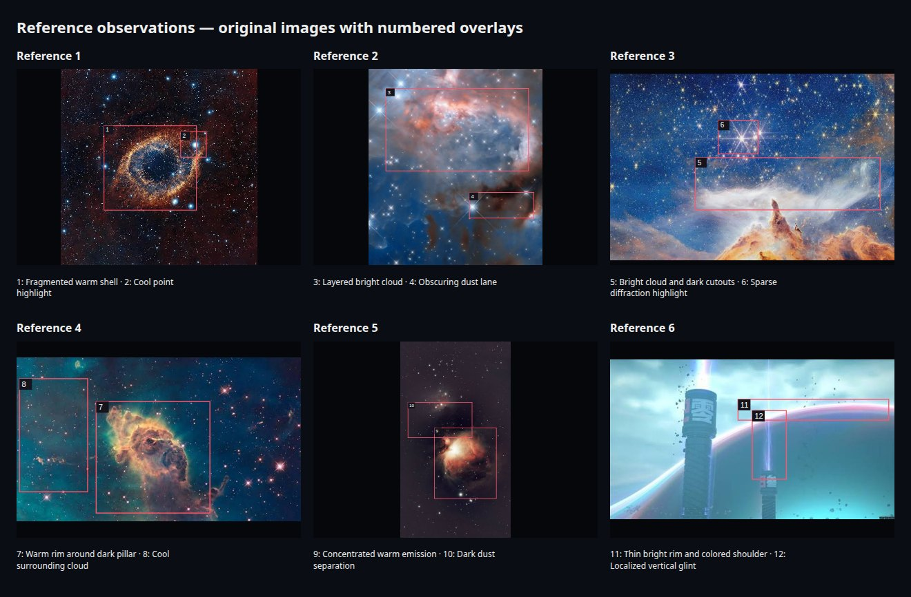

黑洞引力透镜吸积盘与星云日冕
拆解黑洞吸积盘弯曲细丝的连续材质衔接，以及深空星云的多尺度云团、暗尘消光与边缘辉光层次。
吸积盘连续性（1–6）· 星云日冕（1–11）第一章：设计总览
CHAPTER ONE · 12 SPEC ITEMS (F-01 — F-12)- F-01TYPE
设计类型
黑洞引力透镜插图与 6 组天文星云/发光弧参考合集，用于指导实时 WebGL 宇宙场景着色器。
- F-02STYLE
风格
电影级深空视觉：以大片纯黑暗核与高能细丝吸积盘为主体，叠加低对比多层星云背景。
- F-03MOOD
第一印象
大片暗区托举局部集中高亮交汇区，在不把整屏提亮的前提下确立宏大尺度与定向动势。
- F-04GRAMMAR
视觉语言
锐利内边界、不等宽细丝条带、柔和域扭曲云团、不规则暗尘遮挡与稀疏星点共构层次。
- F-05LAYOUT
布局构图
低位圆形黑洞暗核居核心，倾斜吸积盘贯通上下，非对称星云云块环绕于广袤负空间中。
- F-06HIERARCHY
视觉层级
先读盘环交汇亮峰与锐利细边，次读弯曲细丝与暖色云脊，最后感知微弱冷色外延雾气。
- F-07COLOR
色彩系统
近黑基底承托象牙金/琥珀/古铜主辉光，配低饱和青蓝、青灰与柔紫冷色局部反射。
- F-08TYPEFACE
文字排印
深空与天体参考本身不含排印元素；若叠加界面文字，宜保持独立暗场层级，避免遮压发光核心。
- F-09SURFACE
形状与材质
不等间距细丝表现“发光薄片”而非均匀光管；星云半透明云气与锐利发光弧形成软硬反差。
- F-10GRAPHICS
图像与装饰
稀疏针尖星点提供最精细空间尺度；绝不用密集星空或均匀彩色雾气填满暗场。
- F-11MOTION
动态线索
细丝切向转动暗示沿流平流运动；静态图不证明真实流速，外晕可采用缓慢局部圆润隆起假设。
- F-12TAKEAWAY
学习重点
先保证盘/环共享一套材质与相位坐标，再叠加遮挡与辉光；严格分离大云团、细丝与暗尘尺度。
第二章：完整设计分析
CHAPTER TWO · 7 ANALYTICAL MODULES从两个紧密关联的视角拆解深空天体视觉：其一为引力透镜黑洞参考（51.2% 像素亮度低于 10/255），聚焦吸积盘与弯曲光环在上下交汇处的材质连续性与线头隐藏；其二为 5 张深空星云影像与 1 张发光弧光晕参考，解析深空背景层次、暗尘消光与外层发光幔的柔和色晕。
两者的底层共性是“克制暗场 + 集中高光 + 尺度分层”——绝不靠全局提亮或平铺彩色雾气去“凑丰富度”，而是用暗尘带切开云团、用局部交汇过曝自然实现绘画中的“隐没边缘（Lost Edges）”。

| 编号 | 组件名称 | 所属区域 | 作用 | 可见特征 |
|---|---|---|---|---|
| 01 | 锐利内边界 | 圆形暗核轮廓 | 界定中心黑洞暗影 | 比外围光带更窄更锐，呈局部圆弧拟合 |
| 02 | 宽幅引力透镜弯曲带 | 外盘主弧 | 建立弯曲材质流向 | 多束各向异性细丝，间距与亮度不等，切向连贯转动 |
| 03 | 上交汇亮区 | 盘/环重叠处 | 引导视线完成转折 | 亮度渐宽汇聚，多方向薄片叠加使单根边缘自然隐没 |
| 04 | 下交汇亮区 | 盘/环回流处 | 将弧带收回下盘片 | 强高亮与多层薄雾遮蔽单个线头，杜绝截断感 |
| 05 | 倾斜前景盘片 | 主吸积盘 | 确立景深与轴向流动 | 偏暖细密纹理横穿暗核前方 |
| 06 | 外围微弱衰减 | 弯曲带外缘 | 衔接发光体与纯黑 | 低对比弯曲细缕与长尾亮度衰减，不需额外装饰星 |

| 编号 | 组件名称 | 所属区域 | 作用 | 可见特征 |
|---|---|---|---|---|
| 01 | 碎片暖色壳层 | 参考 1 | 大尺度环状组织 | 古铜/金色细丝环绕深暗中心 |
| 02 | 冷白点状高光 | 参考 1 | 局部冷暖微对比 | 青白亮核配极小柔和光晕 |
| 03 | 分层亮云团 | 参考 2 | 建立材质深度 | 大块冷色云体夹杂暖色发光口袋 |
| 04 | 暗尘消光带 | 参考 2 | 切分空间与遮挡 | 不规则深暗尘带横切亮云，防止画面发灰成平雾 |
| 05 | 云气边界 | 参考 3 | 分离空间尺度 | 宽阔淡雾与细小深色突起并置 |
| 06 | 延展星芒亮点 | 参考 3 | 稀疏精细点缀 | 锐利星核配细长衍射芒，仅用于远景背景星 |
| 07 | 受照柱体亮边 | 参考 4 | 定义暗柱体轮廓 | 暖色锯齿亮边包裹深暗内部 |
| 08 | 外围青绿云场 | 参考 4 | 次级环境衬托 | 低对比青绿层次变化，避免死黑背景 |
| 09 | 集中暖光口袋 | 参考 5 | 焦聚视觉能量 | 象牙白中心经琥珀色渐变没入暗尘 |
| 10 | 大块暗云隔断 | 参考 5 | 留出深空负空间 | 大片暗云隔离亮区，维持低中位亮度 (38/255) |
| 11 | 锐利白边与彩色肩部 | 参考 6 | 日冕轮廓层次 | 极窄纯白内缘 + 宽柔粉/玫瑰外肩 + 冷色外围 |
STYLE · 风格与流派
电影级空间/黑洞可视化（Cinematic Black-Hole & Nebula Visualization），结合深空摄影暗场与程序化域扭曲云层。
TECHNIQUE · 视觉技法
共享坐标吸积丝（避免接缝与线头裸露）、绘画“隐没边缘（Lost Edges）”、暗尘消光带、以及窄亮边+彩色晕肩外轮廓调制。
MOOD · 情绪氛围
宏大、深邃、静谧中蕴含定向流动能量的宇宙史诗感。
推荐检索组合：procedural accretion disk shared coordinates · procedural nebula domain warp dust lanes · filamentary emission warm cool contrast · organic emissive contour displacement
连续性层级高于单纯加模糊：几何位置、切线、曲率、带宽、纹理相位与时间平流逐层递进；无纹理的纯透明遮罩条或加重 Bloom 永远无法替代同源发光材质。
工程验证顺序：审美观感之前应先检查“无 Bloom 材质视图”与“编号坐标带视图”，确认多条细丝轨迹和相位连续后再开后处理辉光，并保证 Reduced Motion 下优雅静止。
在 WebGL / Three.js 中构建暗场深空环境下的程序化引力透镜黑洞与多层星云场景。 【几何与材质连续性】 - 保持中心纯黑圆形暗核与极窄锐利的上内缘固定不动；前景吸积盘由远及近按透视间距展开至画面底部，并叠加方向与速度不等的轻微行波起伏。 - 前景盘片、引力透镜弯曲带与上下交汇区必须共用同一套沿流/跨流坐标（ribbon/flow coordinates）与共享时间轴，使不等宽各向异性细丝穿过转折时平滑转向、自然加宽并完全遮蔽单个线头，杜绝独立贴片拼接或无纹理半透明遮罩条。 【星云、暗尘与日冕色晕】 - 背景整体明度须显著退居金色核心之后：构建非对称域扭曲（domain-warped）大云团、细扭曲丝缕、不规则暗尘消光带与稀疏针尖星点，形成清晰的空间尺度分层。 - 色彩以近黑深空为底，主环呈象牙金，外肩叠加不均匀的古铜/玫瑰暖色晕，并仅在局部云场点缀低饱和青绿/柔紫冷色反射。 - 仅对外层发光幔施加少量轻缓、独立相位的圆润隆起，同时保持黑洞暗影边界与细亮内缘稳固；大范围 Bloom 严格从连贯的发光场派生。 【验收标准】 - 开启最终 Bloom 前先检查“无辉光材质视图”与“坐标带视图”，确认交汇区细丝相位连续、无断头与接缝；验证手机/平板/桌面构图适配，并在 Reduced Motion 模式下保持优雅静止。